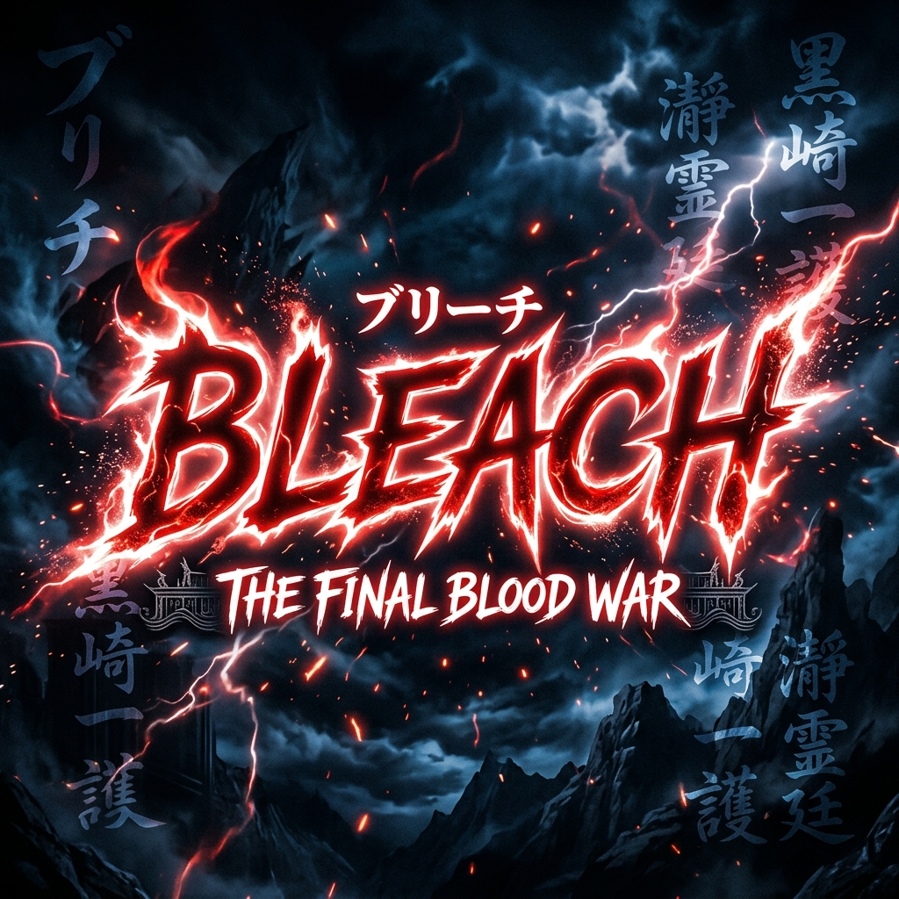
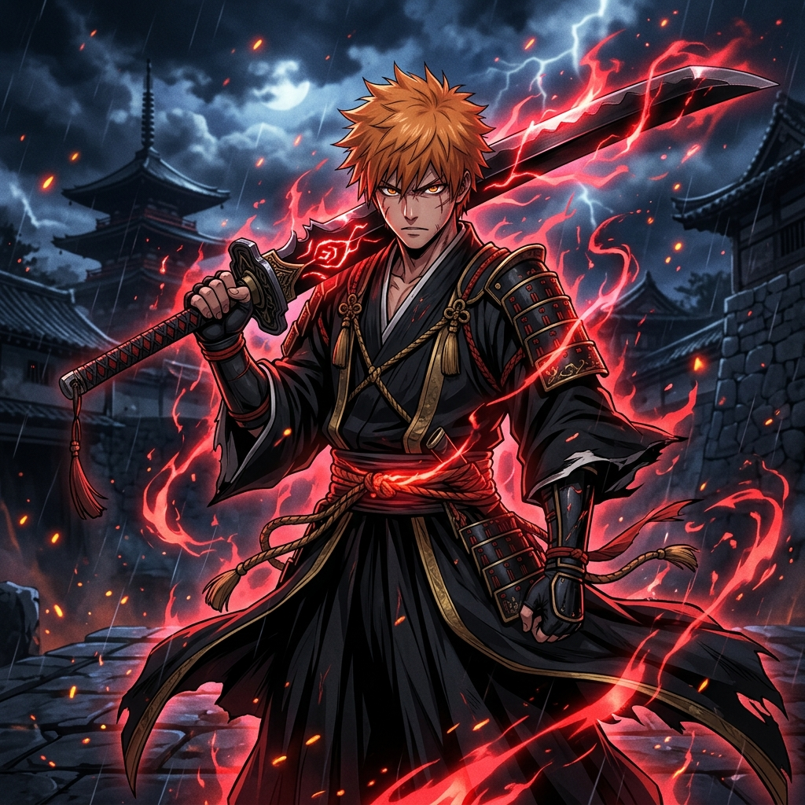
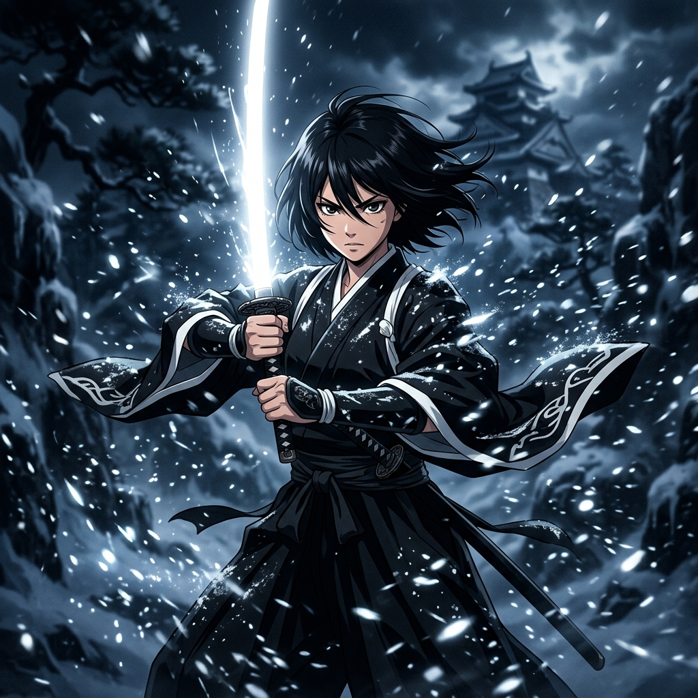
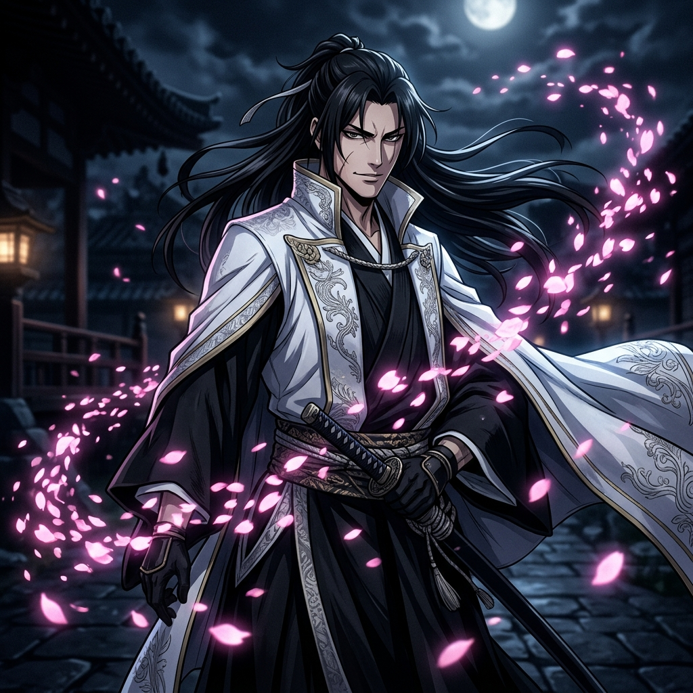
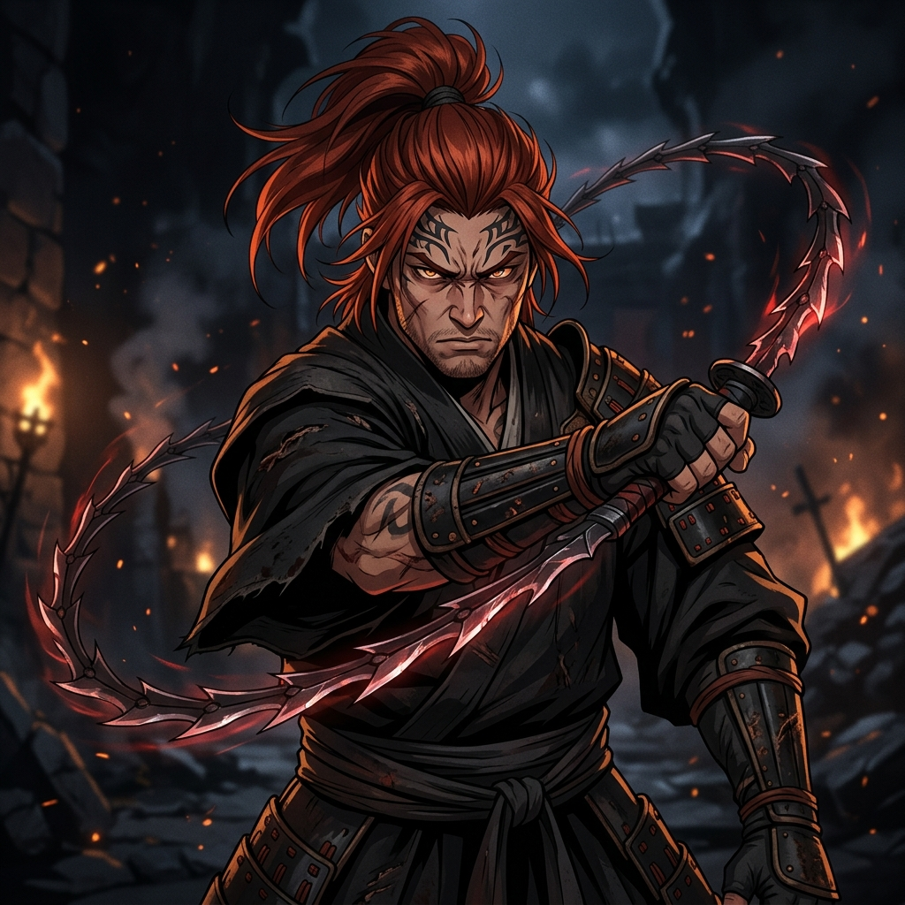
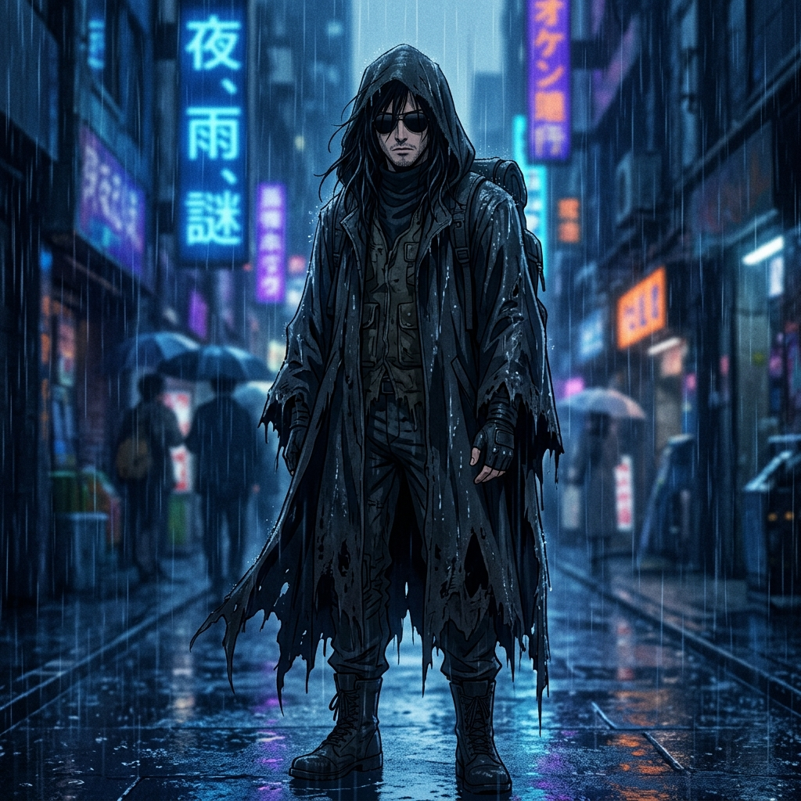

Ichigo Kurosaki never asked for the ability to see ghosts—he was born with the gift. When his family is attacked by a Hollow—a malevolent lost soul—Ichigo becomes a Soul Reaper, dedicating his life to protecting the innocent and helping the tortured spirits themselves find peace.
His journey leads him into the heart of the Soul Society, the afterlife realm governed by the Gotei 13. Through battles that test the limits of his soul, Ichigo uncovers deep-seated conspiracies, faces terrifying Espada, and confronts the absolute orchestrator of chaos.





Ichigo becomes a Soul Reaper and protects Karakura Town from Hollows.
The invasion of Seireitei to save Rukia from execution and uncover a conspiracy.
Aizen's army of Hollow-Shinigami hybrids attack the human world.
A rescue mission into the desolate world of Hollows to save Orihime.
The all-out war between the Gotei 13 and Aizen's Espada forces.
Ichigo regains his lost powers with the help of mysterious human Fullbringers.
The final devastating conflict against Yhwach and the Quincy Wandenreich.
An oversized, cleaver-like blade in constant Shikai state. Its iconic Getsuga Tenshō gathers spiritual energy to unleash a highly concentrated blast of power.
The blade scatters into thousands of microscopic blades that reflect light, resembling cherry blossoms. They tear enemies apart from all directions.
The oldest and most powerful fire-type Zanpakutō. Its heat is absolute, reducing anything it strikes to ash and incinerating the very air.
A deadly gauntlet stinger. Its Nigeki Kessatsu ability guarantees death if the target is struck twice in the exact same spot.
The strongest ice-element Zanpakutō. It commands weather, creating a massive ice dragon that freezes all spiritual pressure it touches.
Controls all five senses to create perfect illusions. Once a victim sees the release of this blade, they fall under absolute hypnosis forever.